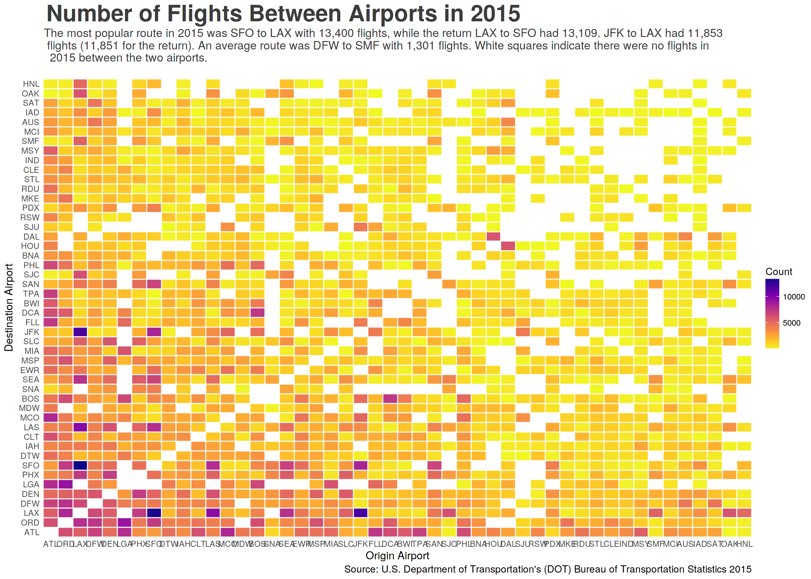

As I build this blog, I’ve been looking for expressive datasets to illustrate ideas and examples. For data management, I found the U.S. Department of Transportation’s (DOT) Bureau of Transportation Statistics delays and cancellation dataset appealing for two reasons: first, it contains a good mixture of variable types (date and time, categorical and numerical); recond, on a personal level, I’ve always been interested in aviation.
This dataset is available from Kaggle, or directly from DOT. You can find all the R code in my gitHub repo.
| year | month | day | day.of.week | airline | flight.number | tail.number | origin.airport | destination.airport | scheduled.departure |
|---|---|---|---|---|---|---|---|---|---|
| 2015 | 1 | 1 | 4 | AS | 98 | N407AS | ANC | SEA | 0005 |
| 2015 | 1 | 1 | 4 | AA | 2336 | N3KUAA | LAX | PBI | 0010 |
| 2015 | 1 | 1 | 4 | US | 840 | N171US | SFO | CLT | 0020 |
| 2015 | 1 | 1 | 4 | AA | 258 | N3HYAA | LAX | MIA | 0020 |
| 2015 | 1 | 1 | 4 | AS | 135 | N527AS | SEA | ANC | 0025 |
The dataset contains 5,819,079 rows and 31. Here’s a quick visualization of origin and destination pairs by the number of flights.
